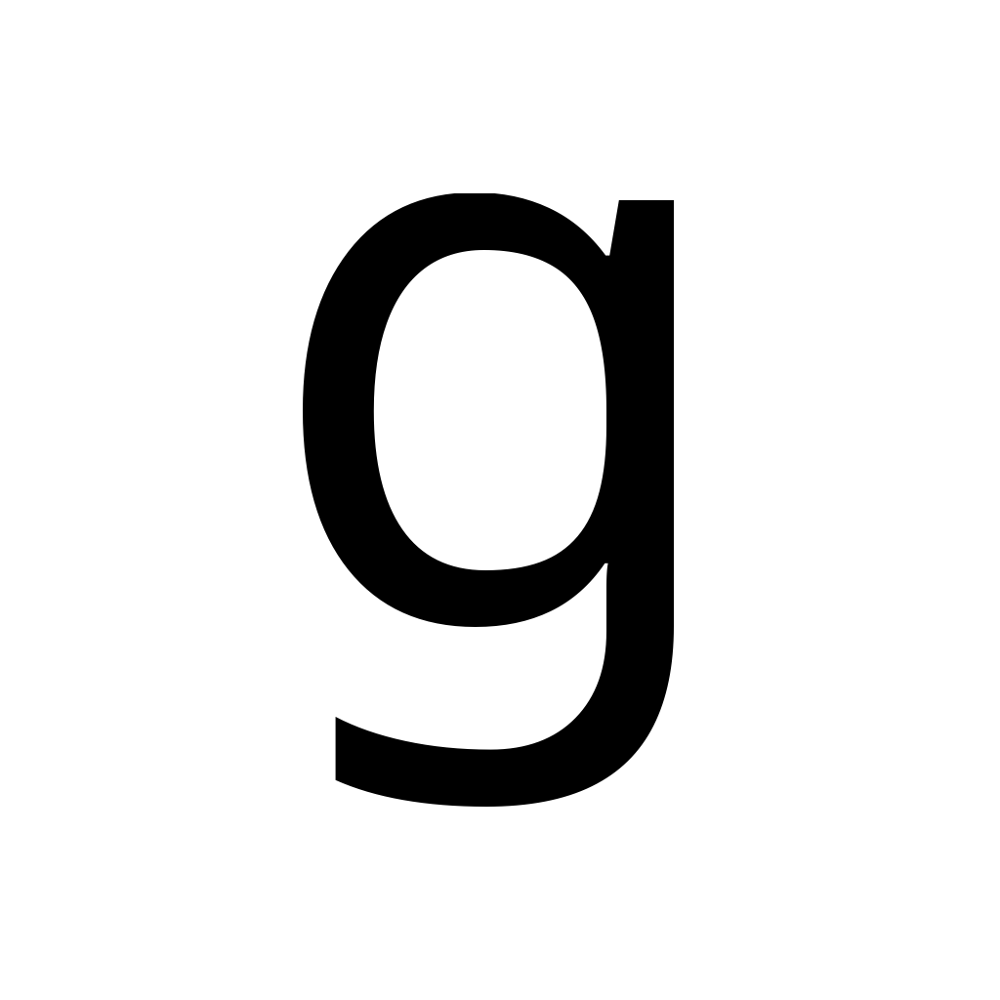
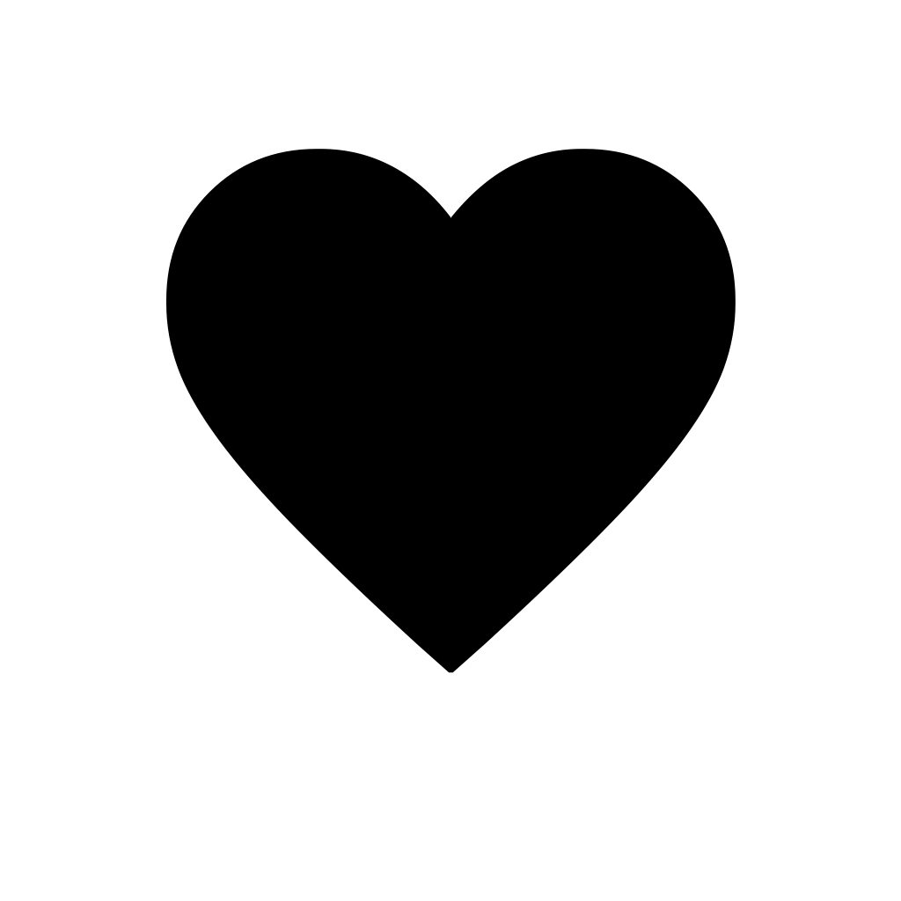

v0.1.0 · macOS 13+
From bitmap
to Bézier.
Trace clean glyphs and symbols into economical cubic outlines—deterministically, locally, and ready for real design work.
Universal Apple Silicon + Intel binary. Apache-2.0 OR MIT.
Raster
Path
100/100reviewed traces accepted
62/62reference glyphs passing
< 1 secsingle-shot CLI p95 gate
2 archesarm64 + x86_64
Real output, no mockups
Trace examples
Every path below was produced by the released beztrace pipeline from a reviewed 1024 × 1024 fixture. Switch between source pixels and baked SVG geometry.


A type-aware tracing pipeline
Structure before polish.
beztrace does more than simplify an edge. It plans typographic structure, fits constrained cubics, refines against the raster, then validates every contour before serialization.
- 01
Prepare
Decode PNG or JPEG, resolve alpha and threshold, normalize coverage.
- 02
Structure
Find subpixel contours, corners, straights, extrema, and inflections.
- 03
Fit
Build economical lines and constrained cubic Bézier sections.
- 04
Refine
Measure raster loss, polish handles, and preserve design joints.
- 05
Validate
Check winding, closure, intersections, handle reach, and determinism.
One outline, two useful formats
Neutral geometry in. Design-tool paths out.
Y-up JSON is the authoritative machine contract for future Glyphs MCP integration. SVG defaults to baked, transform-free coordinates that import upright in Sketch, Illustrator, Figma, and other design tools.
- Versioned JSON schema v1
pathDataVersion 2- Explicit line, curve, and off-curve nodes
- No Glyphs runtime dependency
Terminal
$ beztrace trace glyph.png \
--format json --output glyph.json
// glyph.json
{
"schemaVersion": 1,
"pathDataVersion": 2,
"metadataPolicy": "preserve",
"paths": [
{ "closed": true, "nodes": […] }
]
}Ready for the command line
Install. Trace. Keep designing.
The notarized package installs a universal binary and exposes beztrace at /usr/local/bin/beztrace.
sudo installer -pkg beztrace-0.1.0.pkg -target /